Overview
-
프로젝트 소개
사업 구조 변경에 따라 기업 웹사이트를 리뉴얼한 프로젝트로, 확장된 사업 영역을 반영하고 기존에 분산되어 있던 정보를 하나의 기준으로 정리하고자 진행되었습니다. 신규 주력 사업과 기존 사업이 명확하게 구분될 수 있도록 정보 구조를 재정의하고, 각 페이지를 사업 흐름에 맞게 구성하여 기업의 사업 방향이 일관되게 전달되도록 설계한 프로젝트입니다.
-
참여인원
웹 디자이너 겸 퍼블리셔 1명(본인)
개발자 1명 -
역할
기획, 웹 디자인, 퍼블리싱(HTML, CSS) 전담
-
기간
2023년 11월(약 4주) : 기획 및 디자인
2023년 12월(약 3주) : 퍼블리싱 -
사용 툴(tool)
Figma, Adobe Photoshop, Illustrator
PROJECT BACKGROUND
주력 사업이 변경되면서 회사명이 변경되었고, 기존 웹사이트 구조로는 이를 반영하기 어려운 상태였습니다. 신규 사업 중심으로 콘텐츠를 재구성하고, 주요 정보 전반에 대한 수정이 필요했습니다.
기존 구조는 이러한 변화를 일관된 기준으로 반영하기 어려웠으며, 페이지 간 구성과 표현 방식 또한 통일되어 있지 않았습니다. 이에 사업 구조를 기준으로 정보를 재정렬하고, 변경된 아이덴티티를 반영하면서 전체 인상을 현대적으로 정리하는 방향으로 웹사이트를 리뉴얼하게 되었습니다.
Problem Definition
-
Structural Issues
- 신규 주력 사업이 추가되면서, 기존 사업 중심으로 구성된 정보 구조로는 이를 함께 담기 어려운 상태였습니다.
- 기존 구조를 그대로 확장할 경우, 사업 간 구분과 관계가 명확하게 드러나지 않는 문제가 발생할 수 있었습니다.
-
Design Issues
- 신규 주력 사업의 성격에 비해, 전반적인 시각적 인상이 현재 사업 방향을 충분히 반영하지 못하고 있었습니다.
- 페이지 간 UI 구성과 표현 방식이 일관되지 않아, 정보 전달 기준이 화면마다 다르게 나타나고 있었습니다.
- 반응형이 지원되지 않아, 디바이스에 따라 정보 접근성과 가독성이 저하되는 문제가 있었습니다.
Project Goals
- 신규 주력 사업을 기존 사업과 구분하여 전달할 수 있도록, 사업 구조를 기준으로 정보 체계를 재정의합니다.
- 각 사업 영역이 독립적으로 인지될 수 있도록 콘텐츠 배치 기준과 정보 위계를 정리합니다.
- 페이지 간 UI 구성과 표현 방식을 일관된 기준으로 정리하여, 정보 전달 흐름을 통일합니다.
- 다양한 디바이스 환경에서 동일한 정보 접근이 가능하도록 반응형 기반으로 구조를 재설계합니다.
- 변경된 사업 방향에 맞춰, 전반적인 시각적 인상을 보다 현대적인 방향으로 정리합니다.
DESIGN PROCESS
-
Information Architecture
기존 웹사이트는 사업 관련 정보가 분산되어 있어, 사업 개념과 제품 간 관계를 하나의 흐름으로 이해하기 어려운 구조였습니다. 개편 과정에서 사업 영역을 기준으로 상위 구조를 재정의하고 구분하여, 각 영역 내에서 사업 개념과 제품 정보를 함께 제공하도록 구성하였습니다. 각 사업 페이지는 탭 구조로 세분화하여 정보가 단계적으로 노출되도록 정리하였습니다. 또한 외부 판매 사이트로 연결되던 구조를 제거하고, 자사 서비스인 'myHANIS' 앱 소개 페이지를 구성하여 제품 유통 흐름을 웹사이트 내에서 이어지도록 확장하였습니다.
기존 사이트맵 구조 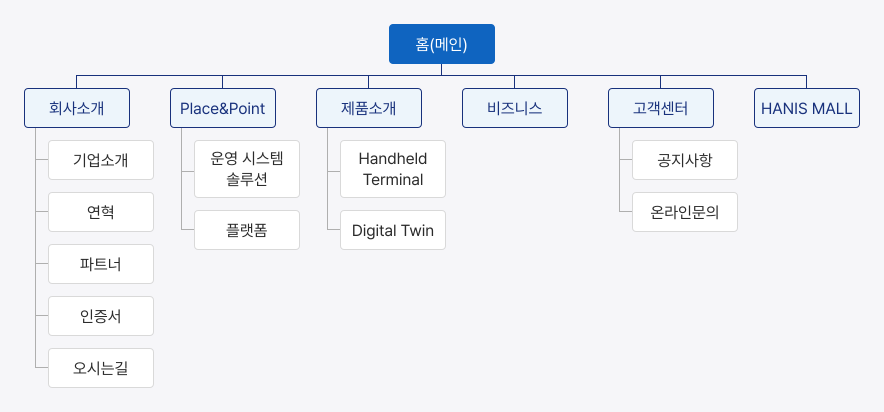
리뉴얼된 사이트맵 구조 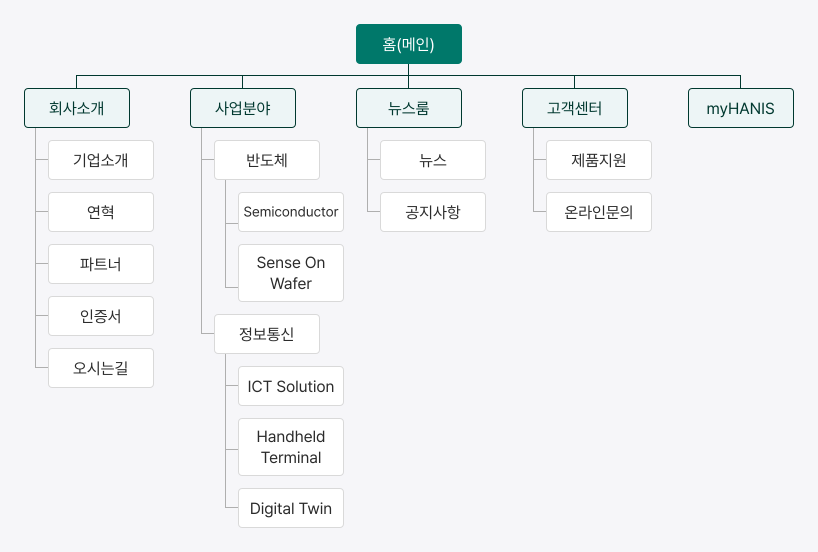
-
Design Direction
기존 웹사이트는 정보 단위 간 간격이 좁고 시각적 기준이 일관되지 않아, 전체적인 인상이 복잡하게 느껴지는 상태였습니다. 콘텐츠 간 간격을 확보하고, 화면 내 정보 밀도를 조절하는 방향으로 시각적 기준을 설정하였습니다. 또한, 변경된 사업 방향에 맞춰 전반적인 인상을 보다 현대적으로 정리하고자, 불필요한 장식을 줄이고 정보 중심으로 화면을 구성하였습니다. 컬러는 역할 기준으로 재정의하여 일관된 체계로 적용하고, 타이포그래피와 레이아웃을 중심으로 정보 위계를 구분할 수 있도록 설계하였습니다.
Typography - Typeface : "Noto Sans"
- Headline (Bold) - 48 / 42 / 32 px
- Title (Bold) - 32 / 24 / 18 px
- Label (Medium) - 18 / 16 / 14 px
- Body (Regular) - 18 / 16 / 14 px
Color Roles -
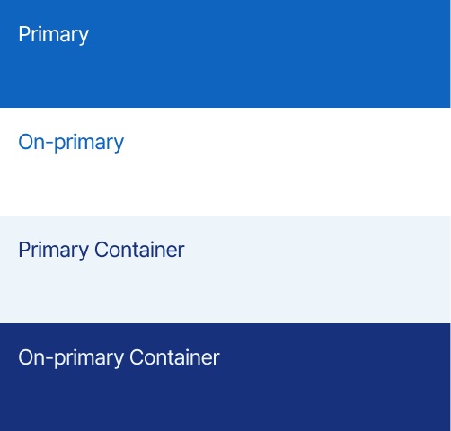
-
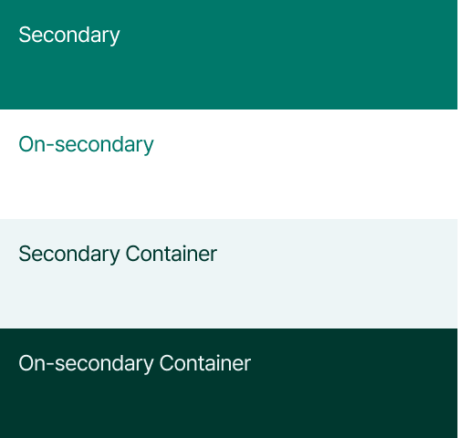
-
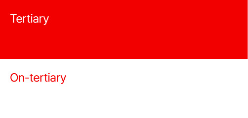
-
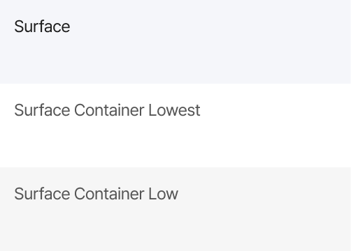
-
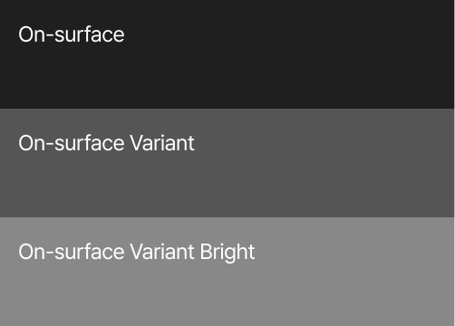
-
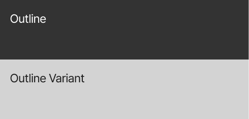
-
Key Design Decisions
기존 웹사이트는 정보 밀도와 구성 기준이 명확하지 않아, 하나의 영역 안에 성격이 다른 정보가 함께 배치된 구조였습니다. 리뉴얼 과정에서 한 영역에서는 하나의 정보만 전달하도록 기준을 설정하고, 콘텐츠를 개별 단위로 분리하여 배치하였습니다. 블록 간 간격을 확보하여 정보 간 경계를 구분하고, 각 콘텐츠가 독립적으로 인지될 수 있도록 정리하였습니다. 반복되는 UI 요소에는 동일한 레이아웃 패턴을 적용하여 페이지 간 정보 전달 방식이 일관되게 유지되도록 구성하였습니다.
기존 레이아웃 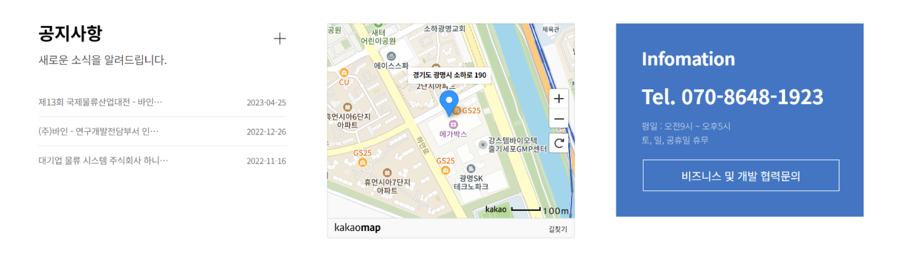
리뉴얼된 와이어프레임 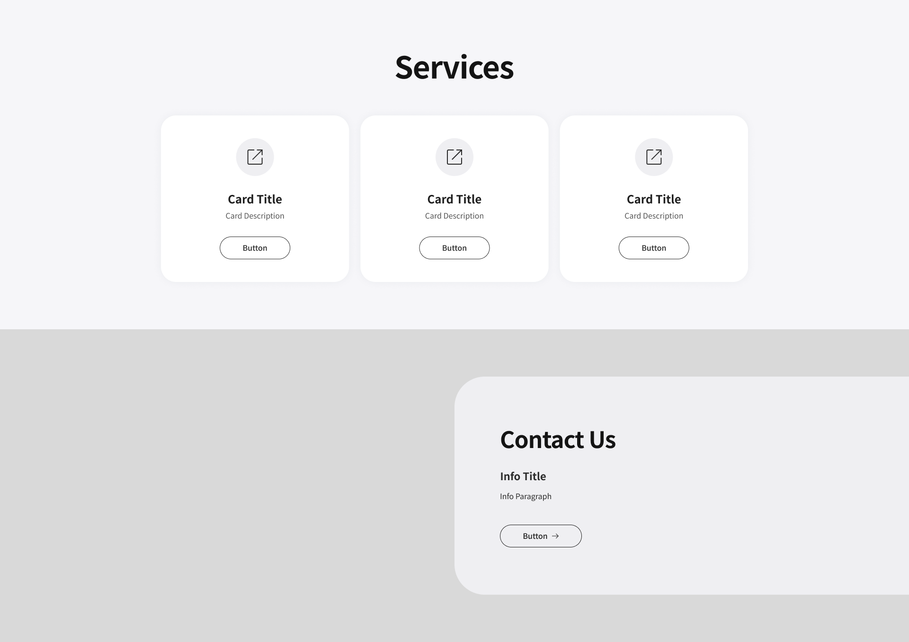
FINAL DESIGN
* 이미지는 사용자의 가로 해상도에 대응하여 최적화된 레이아웃으로 표시됩니다. 화면 크기를 조절하면 다른 해상도 기준의 UI도 확인할 수 있습니다.
-
홈(메인)
신규 주력 사업과 기존 사업이 구분되도록, 메인 페이지 상단에서 각 사업 영역을 독립된 섹션으로 배치하였습니다. 상위 구간에서 핵심 정보를 먼저 노출하여 전체 사업 구조를 빠르게 인지할 수 있도록 구성하였습니다. 페이지 전반은 섹션 단위로 정보를 분리하여 구성하고, 각 영역이 독립적으로 인식될 수 있도록 배치하였습니다. 스크롤 흐름에 따라 사업 구조와 주요 콘텐츠를 순차적으로 이해할 수 있도록 정리하였습니다.
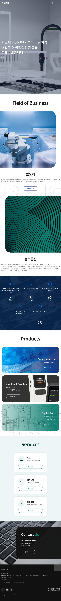
-
사업분야 - 반도체
신규 주력 사업인 반도체 영역은 사업 이해 흐름을 기준으로 페이지를 구성하였습니다. 각 섹션을 독립된 정보 단위로 구분하고, 순차적인 흐름 안에서 사업 구조와 역할이 단계적으로 인지될 수 있도록 정리하였습니다. 비주얼 요소는 외부 출처 자료 대신 실제 공정 및 설비 사진을 사용하였습니다. 사업 내용과 직접적으로 연결되는 이미지를 통해 현장 기반의 신뢰감을 전달하고, 정보 이해의 정확도를 높일 수 있도록 구성하였습니다.
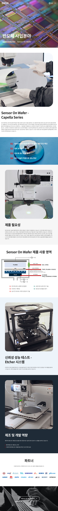
-
사업분야 - 정보통신
기존에 분산되어 있던 사업 관련 정보를 하나의 영역으로 통합하고, 사업 구조를 기준으로 콘텐츠를 정리하였습니다. 개별적으로 나열되던 정보를 동일한 기준 안에서 재배치하여, 정보가 하나의 흐름으로 이어지도록 구성하였습니다.
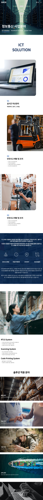
-
myHANIS (앱 소개)
외부 쇼핑 웹사이트 중심의 유통 구조에서 자사 앱 기반으로 전환되면서, 앱 설치로 이어지는 전용 소개 페이지를 구성하였습니다. 웹사이트 내에서 서비스 접근 경로가 단절되지 않도록 흐름을 정리하였습니다. 페이지는 실제 화면 이미지를 중심으로 구성하고, 각 섹션에서 하나의 기능만 전달하도록 내용을 제한하여 정보 집중도를 높였습니다. 시각 요소와 기능 설명을 대응시켜 사용 흐름이 직관적으로 인지되도록 구성하였습니다. 상단과 하단에 다운로드 링크를 배치하여, 위치와 관계없이 설치로 이어질 수 있도록 정리하였습니다.
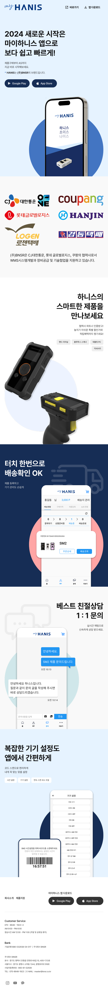
Reflection
기능 설계나 사용자 검증 없이 진행된 프로젝트였기 때문에, 정보 구조와 콘텐츠 배치 자체를 중심으로 설계 기준을 정리하였습니다.
사업 구조 변경을 단순한 정보 추가가 아닌 구조 재정의로 접근하며, 정보 구조가 기업의 사업 방향을 전달하는 핵심 요소로 작용한다는 점을 확인할 수 있었습니다.